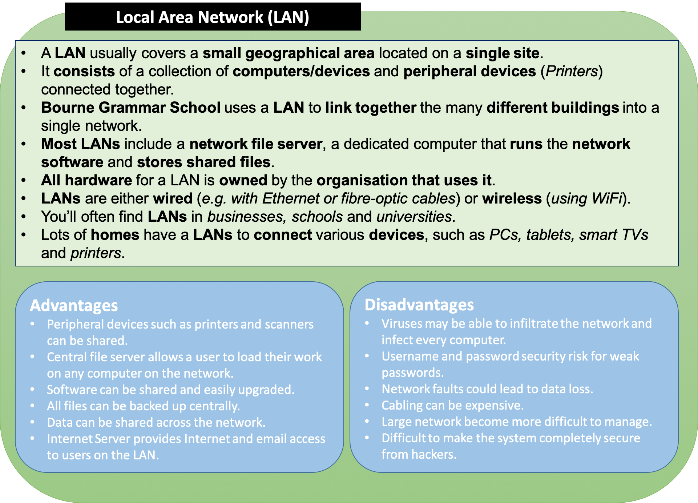
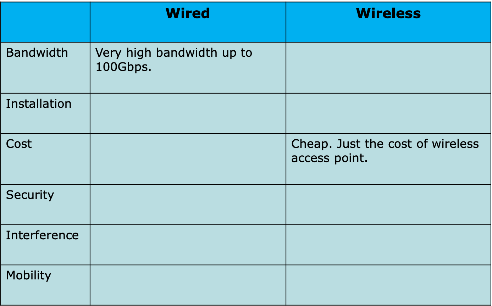
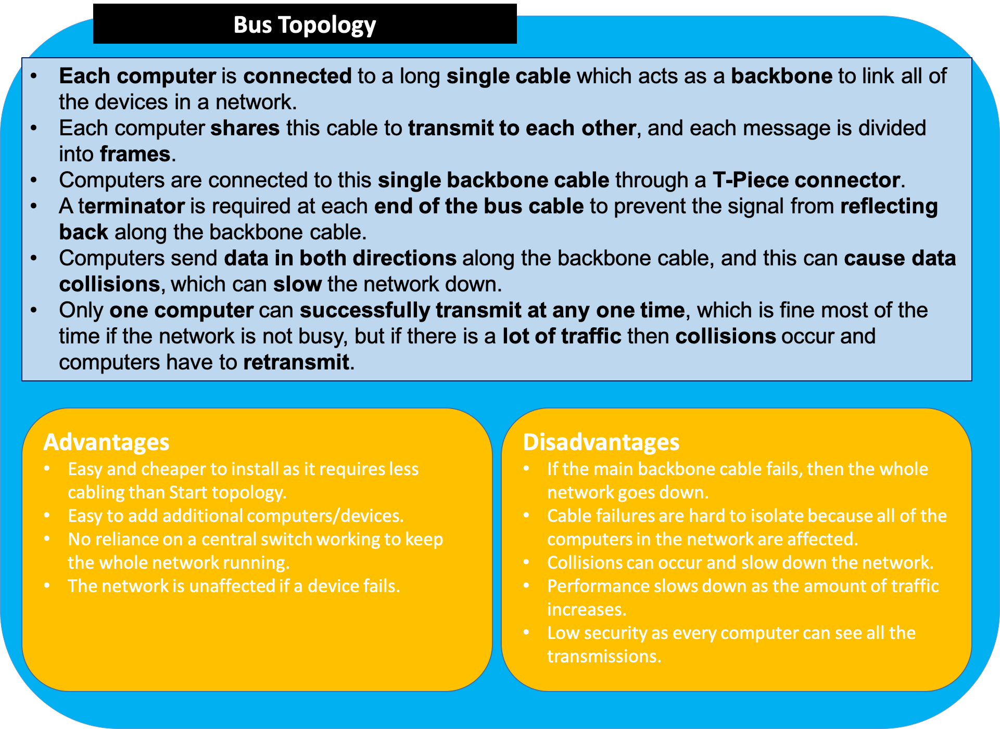

3.5.1 Computer Networks
Table of Contents
- 1. Computer Networks
- 2. Types of Computer Networks
- 3. Network Hardware
- 4. Transmission Media
1 Computer Networks

Learn It: What are Networks?
- When
twoormorecomputers/devices are connected together through acommunication medium, allowing them toexchange data,share resourcesandcommunicate, we have a computer network. - Often a computer network conforms to the
server/clientmodel. - Examples of networks could include:
- Mobile Phones/Devices using Bluetooth (PAN).
- Bourne Grammar School using wired or wireless (LAN).
- The Internet (WAN).
- The largest and most famous
Wide Area Network (WAN)in the World is the Internet. This is a collection of inter-connected networks (LANs). - The Internet is a
Worldwide collectionofcomputers/devicesandnetworks, not owned or managed by any one group of people. Anyone can access the Internet using either wired or wireless connections. - The World Wide Web (WWW) - Is a
collection of html documentsandweb pagesthat are all linked to each other usinghyperlinks. Sir Tim Berners-Lee invented the WWW in 1989. - Websites are stored on
web serversconnected to the Internet, and each website has aunique web address(IP Address), so that it can be accessed. All information on the WWW is stored asHTML documentsknown asweb pages. - Web Pages can be accessed using a program called a
Web Browsersuch as Google Chrome, Firefox or Safari.
- Let's define some of those terms:
Communication Mediarefers to the connection between computers. This could be standard copper cable (normally Cat5e or 6), Fibre Optic cable or Wireless Radio.Resourcesare devices such as printers or storage devices, that computers on the network have shared access to.Serversare just another computer. They may sometimes be very high-powered if the service they are providing is computationally hard (such as serving millions of web-pages or performing advanced modelling) or they can be tiny devices such as a Raspberry Pi (serving media over a home network).Clientsare computers that use the services provided by the server.
Try It: Benefits and Risks of Computer Networks
- Networking provides many benefits because of the ability to communicate between users and devices, but there are also risks!
- Research and *complete the following table explaining the benefits & risks of computer networks:
Try It: Research Advantages and Disadvantages of Computer Networks
- Research and make use each of the keywords shown below to write sentences describing the
advantagesanddisadvantagesof networking computers - Advantages of Networks:
- Files
- Communication
- Resources
- Distance
- Software, server
- Security
- Licensing, money
- Backups
- Disadvantages of Networks:
- Malware
- Single point of failure
- Infrastructure cost
- Administrative cost
- Hackers
Networks Explained Video
2 Types of Computer Networks
Learn It: What are the main types of Networks?
- Computer networks allows computers and devices to be connected together to share data. This includes:
- Computer to computer communications.
- Computers communicating with devices such as printers, a mouse and a keyboard.
- Mobile phone networks.
- Smart Devices (Televisions, Digital Assistants, Fridges, iKettles, iToasters, wearable tech, Smart Home Devices etc..)
- Tablets amd media players downloading/streaming videos and music and playing them through external devices such as speakers and digital projectors.
Personal Area Networks (PANs)
Local Area Networks (LANs) 
Wide Area Networks (WANs)
3 Network Hardware
Learn It: What are Networks made of?
In order to connect to a network, a computer device needs some hardware and also software that allows it to communicate with each other.
A Network Interface Card (NIC)is a component that connects a device to a network. It formats the data sent into the required format according to the protocols (rules) of the network. NICs can exist for both wired and wireless connections.
Switch– Switches connect devices on a LAN. Switches receive data (in units called frames) from one device and transmit this data to the device on the network with the correct MAC address. They build up a table of MAC addresses on the network.
Routers– Are responsible for transmitting data between networks – They’re always connected to at least two different networks. Routers have a crucial role on the Internet, directing data (in units called packets) to their destination. They are used in homes and offices to connect the LAN to the Internet.
MAC Address (Media Access Control)– Every device needs a unique identifier so that it can be found on a network that allow data to be sent to the correct component. They are unique to the device and cannot be changed. MAC addresses are 48 bits in length and are usually displayed as a 12-digit hexadecimal number.
4 Transmission Media
Learn It: What Networks use to communicate?
In order for a network to communicate, it requires a form of transmission media. The two ways that network devices communicate over
a network are either by cable or radio waves (Wired or
Wireless).
Ethernet Cables– The most common Ethernet cables are CAT5e and CAT6, they containing four pairs of copper wires that are twisted together to reduce internal interference. Data is sent as electrical currents.Fibre Optic Cables- Uses glass (or plastic) threads (fibres) to transmit data. A fibre optic cable consists of a bundle of glass threads, each of which is capable of transmitting messages modulated onto light waves. Pulses of light are generated by alight emitting diode (LED)or a laser.
Wireless (Wi-Fi) Wireless Fidelity– Like mobile phones and TVs, wireless networks use radio waves to transmit data. Microwaves are a type of radiowave that consist of electromagnetic radiation travelling in waves with a frequency higher that 1 gigahertz (1GHz to 300GHz per second). Data is transmitted across the network in frequency bands of between 2.4 and 5GHz.- The bands are split into numbered channels that each cover a small frequency range. They also use different Wi-Fi spectrums for example; 802.11b, 802.11g and 802.11n.

Try It: Benefits and Risks of Wired Compared to Wireless Networks
- As we have previously learned, connections between computers on a network can either be wired or wireless.
- In a wired network, computers are connected through wires or cables, whereas in a wireless network, radio waves are used to transmit data, so no cables are needed.
- Mobile phones and televisions also use radio waves to transmit data.
- Wi-Fi is the standard used in wireless networks.
Complete the following table comparing wired and wireless computer networks: 
Learn It: Client-Server and Peer-to-Peer (P2P) Networks
Learn It: Network Topologies
- There are many different ways of configuring hardware on a computer network. The
twomaintopologiesare- Bus

- Star
Badge It: Exam Questions
Silver - Answer the following exam questions:
- In an office there are six computers, a scanner and a router
connected together in a Local Area Network (LAN).
- a) Define the term Local Area Network (LAN)? (1 Mark)
- b) State three advantages of connecting the computers together into a Local Area Network? (3 Marks)
Upload to Fundamentals of Computer Networks - Computer Networks: Silver on BourneToLearn
Badge It: Exam Questions
Gold - Answer the following exam questions:
- Dishley Academy is connected to other schools in the area using a Wide Area Network (WAN).
- a) Describe what is meant by a Wide Area Network (WAN)? (2 Marks)
- b) Explain two of the potential benefits of using a WAN to connect the Academy to other schools? (4 Marks)
- c) Explain three factors that can affect the performance of a network? (6 Marks)
Upload to Fundamentals of Computer Networks - Computer Networks: Gold on BourneToLearn
Badge It: Exam Questions
Platinum - Answer the following two exam questions:
- Jane works from home. She connects her laptop and television to her
home Local Area Network (LAN). Jane uses a home router to connect her LAN together.
- a) State the name of the hardware device inside the laptop that connects it to the LAN? (1 Mark)
- b) Jane connects her devices to the router using either Ethernet or Wi-Fi.
- i) State how an Ethernet connection is different to a Wi-Fi connection? (1 Mark)
- ii) Jane's television lacks any wireless capability. State the name of the hardware Jane can use to allow her television to connect to the LAN wirelessy? (1 Mark)
- Bill's graphic design business has ten members of staff, each
with their own computer. The staff work together by sharing files
between their computers.
- a) The staff's computers are connected together in a Peer-to-Peer network.
- i)Describe what is meant by a Peer-to-Peer (P2P) network? (2 Marks)
- ii) Identify two benefits and two drawbacks of using a Peer-to-Peer (P2P) network? (4 Marks)
- b) An IT consultant suggests the company should adopt a Client-Server network setup.
- i) Describe what is meant by a Client-Server network? (2 Marks)
- ii) Identify two benefits and two drawbacks of changing from a Peer-to-Peer (P2P) network to a Client-Server network? (4 Marks)
- a) The staff's computers are connected together in a Peer-to-Peer network.
Upload to Fundamentals of Computer Networks - Computer Networks: Platinum on BourneToLearn